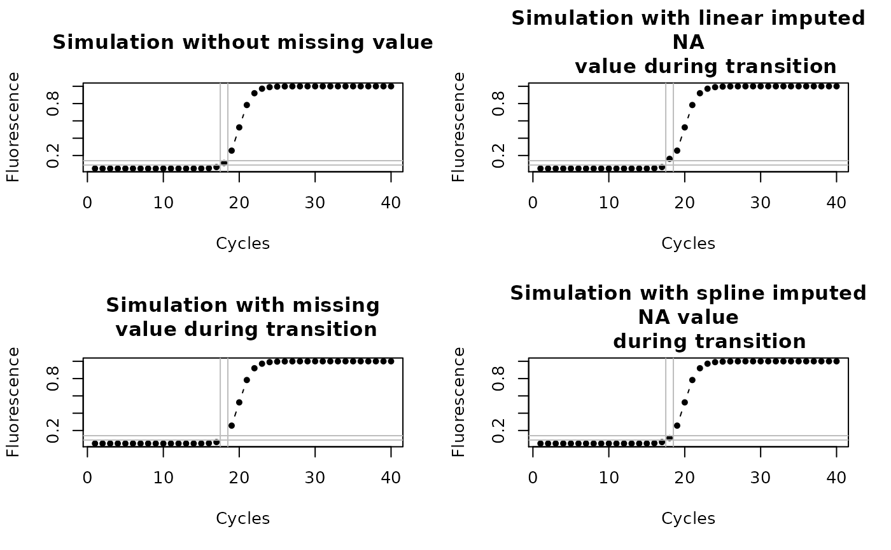

fixNA.RdfixNA imputes missing values in a single
column of data. The imputation is based on a linear approximation by default.
However, the data can also be estimated from an approximation by splines.
# S4 method for numeric,numeric fixNA(x, y, spline = TRUE, verbose = FALSE) # S4 method for matrix,missing fixNA(x, y, spline = TRUE, verbose = FALSE) # S4 method for data.frame,missing fixNA(x, y, spline = TRUE, verbose = FALSE)
| x |
|
|---|---|
| y |
|
| spline |
|
| verbose |
|
Amplification data of experimental systems may contain missing values (NA).
The NAs may be caused by detector problems, acquisition error or other
assorted problems. There are different ways to handle missing values. One
approach is to ignore NAs which is generally acceptable. However, in case of
further calculation it is often necessary to handle cases of missing values in
a way that the next calculation steps can be performed. Missing values can be
eliminated by a imputation. Imputation encompasses various approaches. This
includes to calculate a location parameter (e.g., mean, median) or other
significant values (e.g., minimum, maximum, modus) of a data column. However,
in non-linear processes such as amplification processes its is better to
estimate the missing values from a trend. fixNA was empirically tested and relies on a linear
trend estimation based on the approx function. This
approach is useful but may be problematic on the phases other then background
or plateau phases of an amplification reaction. The parameter
spline on fixNA enables a trend
estimation on splines and may be more appropriate in most scenarios. Other
smoothing functions such as the Savitzky-Golay smoothing filter have the
intrinsic capability to remove missing values [Savitzky and Golay 1964,
Eilers 2003].
Eilers, P. H. C. Anal. Chem. 2003, 75, 3631--3636. Savitzky, A.; Golay, M. J. E. Anal. Chem. 1964, 36, 1627--1639
Stefan Roediger, Michal Burdukiewicz
# Simulate a qPCR reaction with AmpSim with for 40 cycles res <- AmpSim(cyc = c(1:40)) # Introduce a missing value in the transition between # the background and the exponential phase res.NA <-res res.NA[18, 2] <- NA par(mfrow = c(2,2)) plot(res, xlab = "Cycles", ylab = "Fluorescence", type = "b", pch = 20, main = "Simulation without missing value") abline(v = c(17.5, 18.5), col = "grey") abline(h = c(0.09, 0.14), col = "grey") res.NA.linear <- fixNA(res.NA[, 1], res.NA[, 2], spline = FALSE, verbose = FALSE) plot(res.NA.linear, xlab = "Cycles", ylab = "Fluorescence", type = "b", pch = 20, main = "Simulation with linear imputed\n NA value during transition") abline(v = c(17.5, 18.5), col = "grey") abline(h = c(0.09, 0.14), col = "grey") plot(res.NA, xlab = "Cycles", ylab = "Fluorescence", type = "b", pch = 20, main = "Simulation with missing\n value during transition") abline(v = c(17.5, 18.5), col = "grey") abline(h = c(0.09, 0.14), col = "grey") res.NA.spline <- fixNA(res.NA[, 1], res.NA[, 2], spline = TRUE, verbose = FALSE) plot(res.NA.spline, xlab = "Cycles", ylab = "Fluorescence", type = "b", pch = 20, main = "Simulation with spline imputed\n NA value during transition")